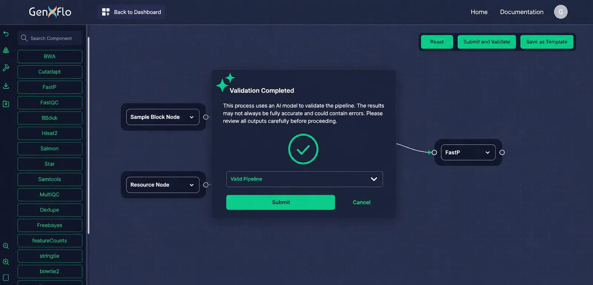

AI Features
AI-Driven Workflow Validation and Optimization
GenXflo integrates advanced AI workflow validation and intelligent optimization to make pipeline development faster, smarter, and more reproducible.
Workflow validation now includes MCP-aware processing to ensure reliable communication and validation across connected components.
By combining artificial intelligence with Workflow Management Tool's logic, GenXflo ensures that every pipeline created from design to export is automatically validated, optimized for performance, and ready for production.
These AI-powered capabilities streamline workflow design, reduce manual configuration errors, and enhances validation accuracy of Workflow Management Tools across diverse environments such as HPC, cloud, and local systems.
Visual Graph to Workflow Management Language
When a pipeline is designed on the GenXflo canvas, each tool, file, and connector forms a directed acyclic graph (DAG).
The exporter performs several background tasks to guarantee accuracy:
- 1Maps every node and connector to a workflow process or module.
- 2Collects input and output channels for each connection.
- 3Generates a configuration block describing runtime resources.
- 4Produces a validated, reproducible pipeline ready for execution in Nextflow or other supported systems.
This visual-to-code conversion ensures that your pipeline maintains logical structure, tool order, and data dependencies exactly as defined in the design phase.
AI Workflow Validation

GenXflo's AI workflow validation engine analyzes pipeline once they are built. It evaluates tool connections, parameters, and data compatibility in real time, ensuring that workflows are error-free and compliant with Workflow Management Tool's standard before execution.
MCP-Enabled Validation
Validate workflows with improved interoperability and communication handling through MCP integration.
How AI Validation Works
1. Connection Validation
Before a pipeline runs, the AI system inspects every connection between tools on the visual canvas.
It confirms that each output is fully compatible with the input of the next step, detecting mismatched file types or missing data links.
This prevents misconfigured channels one of the most common sources of workflow failure.
- Checks output and input compatibility between connected tools
- Prevents pipeline errors before execution
- Ensures reproducibility across multi-step workflows
2. Pre-Execution Warnings
Prior to generating the final Workflow script, GenXflo's AI engine performs a full pre-execution scan.
It flags missing references, unlinked parameters, and incompatible file types providing contextual recommendations to fix issues instantly.
- Detects missing reference files or parameters
- Flags misconfigured or invalid tool settings
- Issues actionable warnings before pipeline execution
3. Realtime Feedback
Validation runs continuously as the workflow is built.
If an error occurs, users receive instant alerts directly on the canvas with highlighted connections.
This makes troubleshooting fast, visual, and intuitive -no code inspection required.
Benefits of AI Workflow Validation
- Reduces trial-and-error during workflow creation
- Enhances reproducibility and reliability
- Prevents pipeline crashes before runtime
- Guides users in building compliant, efficient pipelines
- Improves computational resource utilization
By catching mistakes early, GenXflo's AI validation for Workflow Management Tools ensure that exported pipelines run successfully the first time, saving both time and computing cost.
AI-Assisted Custom Component Creation
Creating new workflow components often requires writing complex configuration files, defining dependencies, and creating Docker environments. GenXflo simplifies this process using AI-assisted component generation.
Instead of configuring each parameter manually, users can rely on AI to generate tool metadata, environment setups, and Dockerfiles automatically, all validated to be compatible with the chosen Workflow Language.
How It Works
- 1Navigate to the Custom Components section in the workspace.
- 2Click Add Tool to create a new component.
- 3Provide the tool name, display name, and repository source (Bioconda, BioArch, or other).
Choose from two AI-powered options:
Auto-Fill with AI:
Automatically completes tool metadata, documentation links, and environment details.
Generate Dockerfile with AI:
Builds a ready-to-use Dockerfile tailored to the tool's dependencies.
- 1Review and edit the generated configuration before saving.
- 2Once saved, the new component appears in the Custom Components sidebar, ready for use.
Each AI-generated tool can be dragged into any workflow, reused across projects, or modified when updates are needed.
How GenXflo Generates Components Using AI
When a user initiates Auto-Fill with AI or Generate Dockerfile with AI, the system performs a multistep reasoning process:
Metadata Analysis:
Parses the tool name, repository, and related sources.
Dependency Mapping:
Determines required libraries, executables, and base images.
Configuration Generation:
Populates process parameters and environment fields automatically.
Validation:
Runs internal ai workflow validation checks to confirm syntax accuracy and compatibility.
This results in a clean, ready-to-use component that fits seamlessly into the designed pipeline.
Benefits of AI-Assisted Component Creation
- Rapid configuration of new tools without manual scripting
- Reduced dependency setup time with AI-generated Dockerfiles
- Consistent, reusable tool definitions across workflows
- Simplified maintenance and version tracking
- Automatic validation for compatibility with the chosen Workflow Language.
The combination of AI validation and automated component generation accelerates pipeline development while maintaining scientific reproducibility.
AI-Driven Resource Optimization
Beyond validation, GenXflo's AI engine optimizes how resources such as CPU, memory, and storage are allocated to each workflow process. It analyzes historical run data, tool characteristics, and resource usage patterns to suggest the most efficient configuration.
Key optimization features:
- Dynamic resource recommendations per process (e.g., FastQC vs. GATK)
- Predictive runtime estimation based on previous executions
- Identification of under or over allocated tasks
- Smart scheduling suggestions for cloud or HPC execution
This ensures optimal performance while minimizing costs, especially valuable in large-scale genomic or proteomic analyses.
MCP Integration for AI Workflow Validation
GenXflo MCP (Model Context Protocol) connects AI clients directly to GenXflo's workflow context, validation rules, and orchestration endpoints. This allows, VS Code and Cursor to build and validate pipelines with tool-aware reasoning instead of generic text-only assistance.
By exposing live pipeline context and schema constraints, MCP improves validation quality and reduces configuration drift across teams and environments.
Supported AI Clients:
Genxflo MCP currently supports VS Code and Cursor, with support for additional AI clients being actively developed
What MCP Adds to AI Features
- Context-aware pipeline generation from natural language prompts
- Schema-level validation before save or pipeline creation
- Consistent ReactFlow-compatible graph structures for canvas rendering
- Automated save, dispatch, status polling, and result download flow
- Cleaner handoff between AI design and production-ready workflow pipeline creation
MCP Capability Flow in GenXflo
- listPipeline: Retrieves a list of all saved pipelines from the GenxFlo backend, including pipeline names, UIDs, and descriptions.
- generatePipeline: Builds a complete GenxFlo pipeline payload and provides an initial local validation report.
- validatePipeline: Checks node, edge, and argument consistency against active constraints.
- savePipeline: Stores validated workflow to the user dashboard.
- downloadPipeline: Retrieves final output ZIP artifacts for local analysis.
Why This Matters for Validation
AI workflow validation becomes more reliable when the model operates with explicit tool contracts and schema definitions. MCP reduces hallucinated parameters, catches dataflow issues earlier, and keeps generated workflows compatible with GenXflo pipeline creation requirements.
For researchers, this means faster iteration, fewer failed runs, and stronger reproducibility from design through creation.
Core AI Features
Error Detection
Automatically identifies broken links, missing inputs, or data type mismatches before execution.
Auto-Parameter Filling
Suggests relevant tool arguments, environment variables, and configuration parameters.
Docker Environment Generation
Creates and validates Dockerfiles to guarantee reproducible environments and dependency isolation.
Workflow Insights
Highlights potential bottlenecks, recommends reusable templates, and suggests performance optimizations.
The Future of AI-Driven Workflow Validation
As workflows become increasingly complex, AI-based validation and optimization will become essential to scalable bioinformatics automation. Different Workflow languages already provides a robust framework for reproducible pipelines, and GenXflo extends it with real-time AI intelligence, making validation proactive rather than reactive.
Future enhancements may include:
- Adaptive AI models that learn from each created workflow
- Predictive error correction before pipeline creation
- Continuous optimization of runtime resources based on created history
- Deeper integration with community standards like nf-core and WDL
These developments will further improve the tool's validation accuracy and resource efficiency across scientific domains.
GenXflo's AI workflow validation and optimization features empower scientists to build smarter, more reliable, and reproducible pipelines. By validating workflows in real time, generating components automatically, and optimizing computational resources, GenXflo sets a new standard for the validation of different Workflow languages and bioinformatics automation.
In summary, GenXflo enables you to:
- Design and validate pipelines with AI assistance
- Prevent configuration errors during validation
- Create new components automatically using AI
- Ensure reproducibility across systems and collaborators
Through AI-driven insight and automation, GenXflo transforms the way researchers develop and deploy workflows, turning complex pipeline management into a fast, intuitive, and reproducible process.
Frequently Asked Questions
How does GenXflo’s AI validation prevent workflow failures?
GenXflo’s AI engine analyzes every connection, parameter, and file type on the canvas in real time. It detects mismatched inputs/outputs, missing references, invalid formats, and misconfigured parameters before export. This prevents the most common causes of workflow crashes and ensures your pipeline is valid and reproducible.
Does GenXflo detect errors while I’m building the workflow?
Yes,GenXflo provides continuous real-time feedback as you design your pipeline. If a tool is connected incorrectly, a channel is missing, or a file type is incompatible, the AI highlights the issue directly on the canvas so you can fix it instantly no code debugging required.
Can GenXflo validate custom tools or components created with AI?
Absolutely. When you create a custom component using AI Auto-Fill or AI Dockerfile Generation, GenXflo validates the generated metadata, parameters, dependencies, and environment. This ensures the new tool integrates correctly into any pipeline and follows workflow language standards.
How does GenXflo optimize resource usage in my workflows?
GenXflo’s AI analyzes tool behavior, historical run data, and process requirements to recommend optimal CPU, memory, and storage settings for each step. It helps avoid under or over-allocation and provides runtime predictions, improving performance on both HPC and cloud platforms.